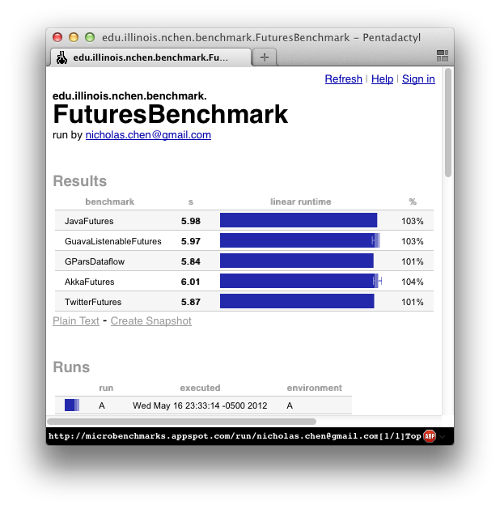

Simple comparison of Future/Promises APIs in Java, GPars, Google Guava, Akka and Finagle/Util.
This is a simple and small weekend project to explore the different APIs for Futures/Promises in various JVM languages. Recently, I noticed that many concurrency libraries for the JVM seem to share some similarities in terms of their APIs and constructs. Thus, I decided to explore those APIs and constructs more. I chose to focus on the following main libraries in the three main JVM languages, i.e, Java, Groovy and Scala.
I wanted a small enough example that it would be easy to write and compare the different APIs. Prior to this, I was a technical reviewer for the book Parallel Programming with Microsoft .NET. In that book, there was a chapter that focused on the Futures API for .NET. I used that example as the basis of this project. I just stripped out the UI layer to make things simpler.
By the way, while this project focuses on JVM languages, the .NET book is also worth skimming just to see how Futures work in the .NET framework.
Since I derived my example from the Parallel Programming with Microsoft .NET book, this project is also licensed under the Microsoft patterns & practices license.
Well, not surprisingly the majority of the APIs were very similar. Unsurprisingly, the Java versions are the most verbose. The two Scala versions are comparable. But the Groovy version is the shortest. Here are the code snippets for the core of the application:
Each library performed comparably. You can find the running times for the application collected through Google Caliper at http://bit.ly/LdJE2f
Here's a screenshot to show you the results as rendered by the Google Caliper benchmark app
This is my first experience with some of the libraries so the way I coded the example might not be very idiomatic. In particular, I am not very fluent in Scala so the way I code might not be representative of the way Scala hackers code.